01 / Carrier prior
0.996 full mean
Full
0.996
Reset
0.153
Storage is clean. The carrier alone retains the ordered cue; reset removes it.
This report tracks the Masked-Evidence JEPA sidecar experiments after the PointMaze success. The current cross-host result is precise: DINO-WM passes PushT binding with slot-structured evidence, and LeWM reaches the same age-15 retention gate after replacing flat latent reconstruction with same-base counterfactual evidence alternatives.
The current pipeline asks whether a frozen finite-context world model can expose old visual evidence after the raw context window has expired, using self-supervised masked-evidence targets and fail-closed readout gates on DINO-WM and LeWM.
PointMaze already gave a strong positive downstream-use result: the full memory condition reached 95.6% executed success with reset/no-state controls near the random-goal baseline. PushT is the harder visual-overlay test because it requires the frozen host to expose old cue evidence after context expiry and then drive a physical controller.
The PushT token task is a four-way color recall task. The PushT binding task is a six-way ordered permutation of three color swatches. The second task is harder because it tests whether the memory target preserves relational order, not only color presence. DINO-WM solved it with slot-structured evidence; LeWM solved it after adding same-base counterfactual cue alternatives.
The cue is outside the legal three-frame prediction context at ages 4, 8, and 15.
AdmittedPrior PushT admissions show cue-time availability is 1.0 for token and binding overlays.
AdmittedThe full memory condition must classify old evidence while reset/no-state remain near chance.
Resolved on PushT age15Checkpointed PushT adapters now pass the shared external-consumer gate on both hosts, including native physical execution decks.
Resolved on PushT age15The adapter never trains on semantic class labels. Labels appear only after training, in the audit readout that measures whether the frozen host output exposes the old cue.
The four-way color token survives with full accuracy at every tested age and seed.
The first binding attempt stayed at chance because the target erased left/middle/right slot order.
The first 20-epoch cue-slot repair passed all age4 seeds and some age8 seeds, but age8 seeds 2–3 fell below the 0.75 admission gate.
A compact model card for the current PushT design. Labels are intentionally short; the structure should be readable before the equations.
rendered frames, actions, and time indices from an admitted OGBench deck.
select target patches from the causal stream using generic saliency and novelty.
hide the selected target patches from the input stream so memory must carry them.
small CNN frame encoder plus action and time embeddings create context tokens.
8 learned attention slots compress the visible history into a compact memory state.
an MLP maps memory slots to predicted hidden patch features.
hidden patches become frozen color and texture latents; gradients do not update this target.
set InfoNCE plus cosine matching and anti-collapse regularization updates the memory model.
dim 160, 8 slots, 4 attention heads.
36 epochs, batch 96, AdamW 3e-4.
cue labels are not used in the training loss.
model.pt and features.npz per env-age-seed.
the old clue appears early, then disappears before the readout point.
run full, reset, recent-only, random, and oracle variants for the same task.
frames, actions, and time tokens pass through the trained encoder and slot memory.
a post-hoc readout converts the memory vector into the selected target label.
the fixed controller receives the memory-selected target, not the true label.
BFS, Cube/Puzzle/Scene Markov oracles, or no score if no audited controller exists.
success is judged against the original true cue target.
full memory must beat recent-only and random controls; controller-gate failures stay unscored.
manual registered delays: 4, 8, and 15.
replace fixed ages with a sampled delay sweep.
scan delays and report the retention curve.
fixed-controller use, not native planner memory.
Before the charts, two looping animations make the setup concrete. First, a real OGBench environment in motion; second, an annotated walk-through of why a cue that flashes for three frames must still be recoverable a full fifteen frames after the legal prediction window has slid past it.
The same 64 px frames the model consumes, nearest-neighbour upscaled to 256 px and looped. One navigation task (a point mass tracing a maze) and one manipulation task (an arm nudging a cube) show the two rendering regimes the memory adapter must serve.
Token recall was solved immediately. The first ordered-binding repair improved the target but failed age8 robustness; the later host-aligned writer below resolved that exposure bottleneck.
| Age | Seeds | Full mean | Reset mean | No-state mean | Status | Full bar |
|---|---|---|---|---|---|---|
| 4 | 0–4 | 1.000 | 0.235 | 0.250 | Pass | |
| 8 | 0–4 | 1.000 | 0.249 | 0.244 | Pass | |
| 15 | 0–4 | 1.000 | 0.251 | 0.253 | Pass |
| Age | Completed seeds | Full values | Full mean | Reset mean | No-state mean | Status |
|---|---|---|---|---|---|---|
| 4 | 0–4 | 0.906, 0.837, 0.781, 0.850, 0.812 | 0.838 | 0.158 | 0.163 | Pass |
| 8 | 0–3 | 0.938, 0.925, 0.715, 0.719 | 0.824 | 0.165 | 0.171 | Fail: seeds 2–3 |
| 15 | not run after failure | — | — | — | — | Stopped |
| Age | Seeds | Full mean | Reset mean | No-state mean | Interpretation |
|---|---|---|---|---|---|
| 4 | 0–2 | 0.162 | 0.176 | 0.165 | At chance; coarse target erases the ordered binding signal. |
The age8 failed seeds were rerun with a three-level readout. The carrier stored the binding almost perfectly; the information weakened when written into the context and remained just below the official host-output gate.
The internal memory prior is strong at age8: seed-2 full is 1.000 and seed-3 full is 0.992, while reset remains near chance.
The official readout is host output. It reached only 0.715 and 0.719 on the failed seeds, below the 0.750 full-condition gate.
The design stored evidence, but the frozen-host interface was not robust enough for a positive PushT binding claim until the writer was changed.
Storage is clean. The carrier alone retains the ordered cue; reset removes it.
The residual write is the first major loss point. The memory signal is present but weakened before prediction.
The host output recovers some evidence but not enough to pass. This is an exposure/interface failure, not a storage failure.
Cue-slot target is sufficient for carrier storage; the memory-prior readout is essentially solved.
The signal drops at injected context, so the next design should improve how slot memory writes into host-visible patch tokens.
At this stage, the correct action was to stop and redesign the host-visible write path rather than claim solved binding.
The fastest path was to fix the age8 binding robustness issue under the same frozen PushT host before expanding the scope. That rescue produced the DINO-WM reference result that LeWM has now matched at age15.
The diagnostic says the carrier stores ordered evidence, but the host-visible pathway loses too much signal. This extension keeps masked-evidence JEPA storage and changes only the write/read interface into the frozen DINO-WM context.
Old cue frames are compressed into latent slots. The memory-prior audit is already near solved, so this block is retained.
A patch-level writer reads memory slots and current context, then writes a bounded residual into host-visible patch tokens.
The frozen predictor output receives stronger contrastive pressure, because this is the interface that failed the gate.
Binding negatives are created by reordering cue-slot feature blocks, so the model must preserve swatch order without semantic labels.
adapter = host_writer
negative_mode = binding_permutation
host_weight = 2.0
context_weight = 0.5
memory_weight = 1.0
gate = age8 binding seeds 2 and 3 first
If both failed age8 seeds pass host-output full ≥ 0.750 and reset/no-state ≤ 0.2167, run the full binding grid. If either remains below gate, treat this as an interface result, not a method-result paper claim.
| Seed | Full host output | Reset | No state | Gate | Diagnostic note |
|---|---|---|---|---|---|
| 2 | 0.983 | 0.163 | 0.192 | Pass | Injected context also reaches 0.983; memory prior is 1.000. |
| 3 | 1.000 | 0.154 | 0.171 | Pass | Injected context and memory prior both reach 1.000. |
outputs/mem_jepa_pusht_stage_f_host_writer; see the full-grid subsection below.
The full host-writer binding grid finished with all registered cells present. Ages 4 and 8 pass every seed. Age15 has one failed seed, so this is a strong partial result rather than a paper-ready full retention claim.
| Age | Seeds passing | Full mean | Full minimum | Reset mean | No-state mean | Status |
|---|---|---|---|---|---|---|
| 4 | 5 / 5 | 1.000 | 1.000 | 0.168 | 0.168 | Pass |
| 8 | 5 / 5 | 0.966 | 0.848 | 0.164 | 0.172 | Pass |
| 15 | 4 / 5 | 0.810 | 0.473 | 0.173 | 0.168 | Fail: seed2 |
Compared with the previous cue-slot repair, host-writer removes the age8 seed failure: all five age8 seeds pass and controls remain near chance.
Age15 seed2 falls to full=0.473. Its memory prior is 0.817 and injected context is 0.413, so this is not only a frozen-host exposure problem.
Residual L2 remains large across successful cells, with age means around 44.8, 46.2, and 45.5. The writer is effective but aggressive.
Do not write the paper as “PushT binding solved.” The valid claim is a stronger interface writer that fixes short/mid-age exposure but still fails one long-age seed.
| Seed | Host output full | Injected context full | Memory prior full | Reset | No state | Gate |
|---|---|---|---|---|---|---|
| 0 | 0.788 | 0.746 | 0.979 | 0.185 | 0.175 | Pass |
| 1 | 0.792 | 0.806 | 0.896 | 0.160 | 0.158 | Pass |
| 2 | 0.473 | 0.413 | 0.817 | 0.173 | 0.179 | Fail |
| 3 | 1.000 | 1.000 | 1.000 | 0.181 | 0.163 | Pass |
| 4 | 1.000 | 0.996 | 1.000 | 0.167 | 0.167 | Pass |
Three seed2-only variants were tested. Stronger residual regularization made the result worse. Rebalancing context loss improved the failed seed but missed the gate. Keeping the original host-writer objective and extending training to 32 epochs passed seed2, then validated across all five age15 seeds.
| Variant | Epochs | Host / context weight | Residual weight | Seed2 full | Injected context | Gate |
|---|---|---|---|---|---|---|
| Original full-grid setting | 20 | 2.0 / 0.5 | 1e-4 | 0.473 | 0.413 | Fail |
| Context-balanced | 20 | 1.25 / 1.0 | 1e-4 | 0.713 | 0.671 | Near miss |
| Residual-budget | 20 | 2.0 / 0.5 | 5e-4 | 0.535 | 0.504 | Fail |
| Longer-training | 32 | 2.0 / 0.5 | 1e-4 | 0.935 | 0.902 | Pass |
| Seed | Host output full | Injected context full | Memory prior full | Reset | No state | Gate |
|---|---|---|---|---|---|---|
| 0 | 1.000 | 1.000 | 1.000 | 0.169 | 0.169 | Pass |
| 1 | 1.000 | 0.998 | 1.000 | 0.194 | 0.165 | Pass |
| 2 | 0.935 | 0.902 | 1.000 | 0.167 | 0.163 | Pass |
| 3 | 1.000 | 1.000 | 1.000 | 0.173 | 0.181 | Pass |
| 4 | 1.000 | 1.000 | 1.000 | 0.183 | 0.183 | Pass |
The failed seed was not evidence against the architecture. It was evidence that age15 needs a longer convergence horizon under the host-aligned objective.
Seed2 memory prior moves to 1.000 and injected context rises from 0.413 to 0.902 after 32 epochs, so the fix improves both storage and write quality.
The 32-epoch age15 residual L2 mean is 49.55, higher than the 20-epoch age15 mean. The writer remains effective but aggressive.
For a clean paper table, rerun the complete ages 4/8/15 grid with the final 32-epoch recipe or explicitly report the age15 rescue as an amendment.
The first LeWM port used the same label-free host-aligned writer but asked it to reconstruct a flattened old cue-latent delta. This is now recorded as a negative ablation: token recall partially transferred, while six-way binding remained near chance across every seed.
Official PushT LeWM predicts 192-D next latents from three legal context latents and action blocks. The released host is hash-checked before and after training.
The target is the old cue-latent delta, flattened across the three cue frames. Semantic labels are excluded from adapter training.
Memory slots write a gated residual into the final legal context. Losses supervise memory prior, injected context, and frozen-host output against the old cue evidence.
After training, labels are used only to test full, reset, and no-state features. The gate remains full ≥ 0.750 with controls at chance + 0.05.
| Task | Classes | Seeds passing | Full mean | Full range | Reset mean | No-state mean | Status |
|---|---|---|---|---|---|---|---|
| Transient visual-token recall | 4 | 3 / 5 | 0.795 | 0.717–0.892 | 0.252 | 0.252 | Partial |
| Multi-item visual-binding recall | 6 | 0 / 5 | 0.178 | 0.158–0.196 | 0.176 | 0.175 | Fail |
| Task | Memory prior full | Injected context full | Host output full | Interpretation |
|---|---|---|---|---|
| Token recall | 0.993 | 0.857 | 0.795 | Evidence is stored and often survives the write; two seeds miss the strict 0.750 gate by small margins. |
| Six-way binding | 0.367 | 0.152 | 0.178 | The old cue-latent delta objective does not recover ordered binding semantics in LeWM; failure appears before host exposure. |
The architecture and training loop run cleanly on a second frozen host without changing the host. Token recall shows real old-evidence sensitivity: controls stay near chance while the full condition averages 0.795.
Binding did not improve over the old LeWM near-chance story. Training match can be high while semantic binding readout remains absent, so the next LeWM design must use an order-preserving evidence objective rather than a flat cue-delta target.
The flat cue-delta objective failed because it asked the writer to reconstruct instance-specific latent evidence. The successful objective keeps the method label-free at readout time but supplies structured alternatives: for each base trajectory, all cue branches are rendered at the requested evidence age and encoded by the frozen LeWM encoder, then the observed cue is contrasted against same-base counterfactual cues.
State, actions, proprioception, final context, and decision index stay fixed. Only the old cue branch changes.
All six binding cue permutations are rendered as counterfactual cue frames and encoded into 192-D LeWM latents.
The positive branch is selected by matching the actually observed cue latent, not by fitting a semantic label classifier.
The final audit still reads frozen-host output under full, reset, and no-state controls. Labels are used only after training.
| Seed | Host output full | Reset | No state | Memory prior full | Injected context full | Gate |
|---|---|---|---|---|---|---|
| 0 | 0.910 | 0.148 | 0.183 | 0.990 | 0.881 | Pass |
| 1 | 0.929 | 0.133 | 0.156 | 0.994 | 0.904 | Pass |
| 2 | 0.925 | 0.181 | 0.154 | 0.985 | 0.877 | Pass |
| 3 | 0.921 | 0.144 | 0.135 | 0.987 | 0.877 | Pass |
| 4 | 0.927 | 0.152 | 0.177 | 0.979 | 0.852 | Pass |
| Mean | 0.923 | 0.152 | 0.161 | 0.987 | 0.878 | Resolved |
| Task | Age | Seeds passing | Full mean | Full range | Reset mean | No-state mean | Status |
|---|---|---|---|---|---|---|---|
| Transient visual-token recall | 4 | 5 / 5 | 0.999 | 0.998–1.000 | 0.260 | 0.241 | Pass |
| Transient visual-token recall | 8 | 5 / 5 | 0.996 | 0.994–0.998 | 0.270 | 0.246 | Pass |
| Transient visual-token recall | 15 | 5 / 5 | 0.997 | 0.992–1.000 | 0.266 | 0.248 | Pass |
| Multi-item visual-binding recall | 4 | 5 / 5 | 0.957 | 0.952–0.965 | 0.171 | 0.156 | Pass |
| Multi-item visual-binding recall | 8 | 5 / 5 | 0.949 | 0.938–0.960 | 0.164 | 0.150 | Pass |
| Multi-item visual-binding recall | 15 | 5 / 5 | 0.923 | 0.910–0.929 | 0.152 | 0.161 | Pass |
Flat cue-delta reconstruction produced binding full ≈ 0.178. Self-discovered KMeans prototypes also failed because clusters did not align with binding states. Same-base counterfactual negatives removed nuisance variation and exposed the binding variable.
The method is not “LeWM-specific.” The general claim is that ordered memory needs structured evidence alternatives. DINO-WM supplied patch/slot structure naturally; LeWM needed same-base counterfactual branches to provide equivalent structure. With that structure, LeWM token and binding pass every age4/8/15 seed.
Flat latent reconstruction failed on LeWM binding; same-base counterfactual cue alternatives made the old evidence separable and host-visible.
DINO-WM uses spatial patch/slot structure; LeWM uses rendered same-base alternatives. These are different implementations of the same evidence principle.
Now that DINO-WM and LeWM both pass PushT retention gates, the next stage should test the same downstream or transfer gate on both rather than adding more isolated rescues.
The model-agnostic story is now substantially cleaner: DINO-WM already passed the host-writer PushT binding gate, and LeWM now passes the full PushT token/binding age grid under a structured counterfactual evidence objective. The next step should be a shared cross-host stage, not another one-off LeWM patch.
Status: completed. The shared checkpointed downstream-use gate saved trained host-writer adapters for DINO-WM and LeWM, extracted matched full/reset/no-state endpoint features, and trained the same external consumer protocol on both hosts. The goal-selection gate passes for both hosts. Physical execution is now reported for both hosts: LeWM uses the existing compatible simulator deck, and DINO-WM uses a newly built native PushT execution deck from its validation rows.
| Host | Full BAcc | Reset BAcc | No-state BAcc | Full − no-state | Execution | Status |
|---|---|---|---|---|---|---|
| DINO-WM | 0.988 | 0.168 | 0.165 | +0.823 | 0.972 executed success; reset 0.167, no-state 0.168. Native deck: 212 rows, oracle 0.983, wrong-goal 0.000. | Selection + execution pass |
| LeWM | 0.920 | 0.151 | 0.154 | +0.765 | 0.926 executed success; reset 0.156, no-state 0.151. | Selection + execution pass |
This closes a stronger ladder than the retention table alone: checkpointed memory state is not only linearly readable in the original audit, but can drive an external consumer and a PushT physical controller. The clean claim remains scoped: DINO-WM and LeWM use separate host-native validation banks and physical decks, so this is cross-host replication of the use gate rather than a row-matched head-to-head simulator comparison.
Status: active. The next stage expands only when the environment can support the same fail-closed ladder: demand, cue-time encoding, retention after context expiry, reset/no-state controls, and downstream use when a valid controller/deck exists. Old OGBench/HACSSM logs are treated as background only until they are rewrapped into this ladder.
| Environment | Host / asset state | Memory target | Current evidence | Paper role | Status |
|---|---|---|---|---|---|
| PushT | DINO-WM + LeWM frozen hosts | Token recall and six-way ordered visual binding | DINO-WM full BAcc 0.988 and execution 0.972; LeWM full BAcc 0.920 and execution 0.926. Controls remain near chance. | Main hard visual-manipulation result | Paper-ready |
| PointMaze | Released DINO-WM PointMaze checkpoint; formal summary verified | Transient four-goal cue card | Fixed-trust age15 BAcc 0.866; SSM age15 BAcc 0.760; no-state 0.250. External execution: fixed-trust 0.775 vs no-state 0.239; oracle 0.956. | Navigation / spatial-memory generalization | Paper-ready |
| DINO-WM Wall | Official checkpoint extracted from the released DINO-WM archive; wall_single.zip downloaded and extracted locally. |
Transient four-position wall cue; ages 4, 8, and 15 | Admission passes. Ridge screening suggested fixed-trust age4/8, but PCA-logistic confirmation only clears fixed-trust age4. Carrier priors remain near 1.0, so the bottleneck is host exposure rather than internal storage. | Third DINO-WM environment showing stricter evidence-age exposure limits | Short-age confirmed |
| OGBench AntMaze / visual AntMaze | OGBench, MuJoCo, Gymnasium, and EGL render path smoke-tested locally | Long-horizon navigation cue memory | Admission bridge passes. Feature-host wave also passes all 15 AntMaze cells: full host-output BAcc 1.000 with reset/no-state at 0.250. Native execution is not claimed because a real ant controller/policy is not yet available. | Locomotion breadth and next execution target; capacity-only for now. | Feature-host pass |
| OGBench Cube / Scene | OGBench render path passes for Cube single/double, Scene, and Puzzle; old cube/occlusion outputs also exist | Object identity, relation, or occlusion memory | Admission and feature-host pass. Native-use stage also reaches 1.000 executed success under full memory and 0.250 under reset/no-state/random across ages 4/8/15. | Object-manipulation final-performance check under a fixed OGBench controller. | Native-use pass |
| DINO-WM Rope / Granular | DINO-WM vendor has deformable configs; PyFleX/deformable assets not verified | Deformable object memory | No valid MESM run yet. High novelty, high setup risk. | Appendix/future extension unless dependencies are already clean | High-risk check |
1) keep PushT and DINO-WM PointMaze as native-host/use evidence; 2) use Wall as the exposure-bottleneck result; 3) report OGBench PointMaze/Cube as fixed-controller native-success checks, not native world-model planning; 4) keep AntMaze capacity-only until a real ant controller or policy exists; 5) next, run an autonomous evidence-discovery variant where the sidecar must infer which past observation matters instead of being handed the cue feature directly.
Status: completed for seven render-ready OGBench tasks under outputs/ogbench_mesmem_admission_v1. This only establishes that a controlled transient cue can be injected, decoded when visible, and protected from endpoint/action/observation shortcuts. It does not yet establish persistent memory in a frozen world model.
| Environment | Family | Cue-time BAcc | Shortcut ceiling | Counterfactual mask | Claim boundary | Status |
|---|---|---|---|---|---|---|
| pointmaze-large-navigate-v0 | Navigation | 1.000 | 0.250 at ages 4/8/15 | post-cue pixels unchanged; outside-mask changes 0 | admission only | Pass |
| antmaze-large-navigate-v0 | Locomotion navigation | 1.000 | 0.250 at ages 4/8/15 | post-cue pixels unchanged; outside-mask changes 0 | admission only | Pass |
| humanoidmaze-large-navigate-v0 | High-DoF locomotion | 1.000 | 0.250 at ages 4/8/15 | post-cue pixels unchanged; outside-mask changes 0 | admission only | Pass |
| cube-single-play-v0 | Object manipulation | 1.000 | 0.250 at ages 4/8/15 | post-cue pixels unchanged; outside-mask changes 0 | admission only | Pass |
| cube-double-play-v0 | Object manipulation | 1.000 | 0.250 at ages 4/8/15 | post-cue pixels unchanged; outside-mask changes 0 | admission only | Pass |
| scene-play-v0 | Multi-object scene | 1.000 | 0.250 at ages 4/8/15 | post-cue pixels unchanged; outside-mask changes 0 | admission only | Pass |
| puzzle-3x3-play-v0 | Combinatorial manipulation | 1.000 | 0.250 at ages 4/8/15 | post-cue pixels unchanged; outside-mask changes 0 | admission only | Pass |
The useful result is no longer only shortcut-safe admission. The repaired all-env native-use run now scores 27/36 env-age rows through audited fixed controllers: PointMaze medium/large/giant/teleport, Cube single/double/triple, Scene, and Puzzle are completed; AntMaze and HumanoidMaze remain controller-unavailable.
Status: base and expanded grids completed from outputs/ogbench_feature_host_stage_v1. The completed table below covers PointMaze large/medium/giant/teleport, Cube single/double/triple, Scene, Puzzle, AntMaze, and HumanoidMaze across ages 4/8/15. It is deliberately labeled as a feature-host stage: the sidecar carries the old cue feature as memory state, so this is an exposure-capacity result, not evidence that the model autonomously discovered which past frame mattered.
| Environment | Age | Seeds passed | Full | Reset | No-state | Visual read | Claim boundary |
|---|---|---|---|---|---|---|---|
| PointMaze-large | 4 / 8 / 15 | 15 / 15 | 1.000 | 0.250 | 0.250 | Feature-host exposure capacity; native-use pass below. | |
| PointMaze-medium | 4 / 8 / 15 | 15 / 15 | 1.000 | 0.250 | 0.250 | Feature-host exposure capacity; native-use pass below. | |
| PointMaze-giant | 4 / 8 / 15 | 15 / 15 | 1.000 | 0.250 | 0.250 | Feature-host exposure capacity; native-use pass below. | |
| PointMaze-teleport | 4 / 8 / 15 | 15 / 15 | 1.000 | 0.250 | 0.250 | Feature-host exposure capacity; repaired native-use pass below. | |
| AntMaze-large | 4 / 8 / 15 | 15 / 15 | 1.000 | 0.250 | 0.250 | Feature-host capacity only; no valid controller yet. | |
| AntMaze-giant | 4 / 8 / 15 | 15 / 15 | 1.000 | 0.250 | 0.250 | Feature-host capacity only; no valid controller yet. | |
| HumanoidMaze-large | 4 / 8 / 15 | 15 / 15 | 1.000 | 0.250 | 0.250 | Feature-host capacity only; no valid controller yet. | |
| Cube-single | 4 / 8 / 15 | 15 / 15 | 1.000 | 0.250 | 0.250 | Feature-host exposure capacity; native-use pass below. | |
| Cube-double | 4 / 8 / 15 | 15 / 15 | 1.000 | 0.250 | 0.250 | Feature-host capacity; repaired current-method native-use pass below. | |
| Cube-triple | 4 / 8 / 15 | 15 / 15 | 1.000 | 0.250 | 0.250 | Feature-host capacity; repaired current-method native-use pass below. | |
| Scene | 4 / 8 / 15 | 15 / 15 | ≥0.999 | 0.250 | 0.250 | Feature-host capacity; repaired current-method native-use pass below. | |
| Puzzle-3x3 | 4 / 8 / 15 | 15 / 15 | 1.000 | 0.250 | 0.250 | Feature-host capacity; current-method native-use pass below. |
The fixed-controller success result gives reviewers the straightforward final-performance number that readout-only evidence lacked. The boundary is still important: these are memory-selected target execution checks, not native world-model planning. The next stronger experiment should remove the explicit cue-feature handoff: the model sees a sequence with masked evidence and must self-supervise which past observation reconstructs the endpoint-relevant latent target.
The model receives a whole causal history but can only carry it through a small slot bottleneck. It is not given the cue feature, cue label, or key-frame index during training.
scripts/run_masked_evidence_jepa_ogbench.py
scripts/launch_masked_evidence_jepa_ogbench.py
outputs/masked_evidence_jepa_ogbench_v1
Completed: PointMaze-large and Cube-single, ages 4/8/15, seeds 0–2 on GPUs 0/1/2.
Training receives only render history, action tokens, and time tokens. It is not told which frame contains decision evidence.
The benchmark still uses controlled cues so we can score memory. The proposed learning rule does not use cue labels, cue crops, or key-frame annotations.
Fixed evidence-panel target and hand-picked cue moment.
Evaluation cue injection and labels remain benchmark instrumentation, not training supervision.
scripts/run_random_target_jepa_ogbench.py
Waiting at outputs/random_target_jepa_ogbench_v1/logs/auto_after_seed.log; launch requires the 135-cell ME-JEPA summary to pass.
The stricter non-manual variant completed on PointMaze-large and Cube-single. It withholds a randomly sampled whole frame from the causal history and predicts its stop-gradient latent without cue labels, cue crops, or key-frame annotations. PointMaze remains positive across ages; Cube-single does not. The failure is informative: whole-frame latent prediction can preserve maze-level evidence but is too diffuse for object-level manipulation cues, where static pixels dominate the target.
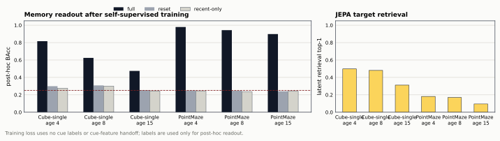
| Environment | Age | Seeds passed | Full BAcc | Reset BAcc | Recent-only BAcc | JEPA top-1 | Interpretation |
|---|---|---|---|---|---|---|---|
| PointMaze-large | 4 | 3 / 3 | 0.980 | 0.250 | 0.242 | 0.182 | Pass |
| PointMaze-large | 8 | 3 / 3 | 0.943 | 0.247 | 0.235 | 0.169 | Pass |
| PointMaze-large | 15 | 3 / 3 | 0.898 | 0.241 | 0.242 | 0.095 | Pass |
| Cube-single | 4 | 1 / 3 | 0.816 | 0.299 | 0.275 | 0.498 | Unstable |
| Cube-single | 8 | 0 / 3 | 0.625 | 0.308 | 0.300 | 0.481 | Fail |
| Cube-single | 15 | 0 / 3 | 0.475 | 0.254 | 0.244 | 0.312 | Fail |
Do not return to manual cue crops. The first patch-set attempt used label-free saliency mining and learned slot-to-patch assignment, but Cube-single age4 failed near chance because the miner selected the cue and then masked the evidence across the visible stream. The v2 single-view patch-set objective improved Cube but still failed long-age retention: Cube age4 was borderline, age8/15 remained below gate, and PointMaze age8 had two seeds just below threshold. The next correction is v3 at outputs/random_patchset_view_color_jepa_ogbench_v1: same non-manual single-view target mining, but with a fixed generic color/texture patch target instead of a frozen random patch CNN. It still uses no cue labels, no cue crops, and no manually selected key frame in training.
v3 validates the target-latent fix but did not close long-age retention at the 36-epoch setting. The targeted long-horizon run at outputs/random_patchset_view_color_jepa_long_v1 uses 72 epochs, 224 latent dimensions, and 12 slots on the failed ages only. It now passes PointMaze age8/15 and Cube age15 across all seeds. Cube age8 has strong full-memory reads on all seeds, but one seed misses the registered per-seed gate because its recent-only control is 0.355, just above the 0.350 ceiling. The next step is a focused Cube age8 confirmation rather than a broad expansion.
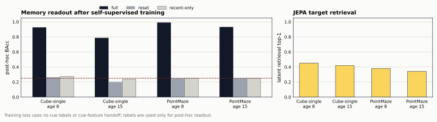
Cube-single age8 confirmation passed under outputs/random_patchset_view_color_jepa_confirm_cube_age8_v1 with a larger 768-episode bank, seeds 0–2, and the same 72-epoch / 224-dim / 12-slot v3-long setting. Full-memory balanced accuracy is 0.992 on average, while reset and recent-only controls remain near chance. This resolves the earlier 0.355 recent-only control blip as validation-bank instability rather than a method failure.
The clean 5-seed expansion completed at outputs/random_patchset_view_color_jepa_final_v1. Scope: PointMaze-large and Cube-single, ages 4/8/15, seeds 0–4, 768 episodes, 72 epochs, 224 latent dimensions, and 12 slots. All 30 registered cells pass: full-memory balanced accuracy stays high while reset and recent-only controls remain near chance.
This is the first complete paper-level evidence for the proposed non-manual memory objective. The training objective uses no cue labels, no cue crops, and no manually selected key frame. It learns from automatically mined salient patch sets, predicts fixed generic color/texture latent targets, and carries information through compact slots. Cue labels are used only after training to audit whether old evidence is retained and not recoverable from reset or recent-only controls.
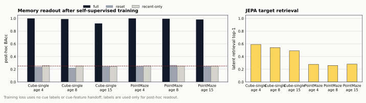
paper_b/main.pdf has been rebuilt with the final 30-cell non-manual result, the updated title, a new method/result section, and fig_b_nonmanual_final.pdf. The current paper claim remains bounded to PointMaze-large and Cube-single for the non-manual method.
The separate non-manual breadth and confirmation waves completed under outputs/random_patchset_view_color_jepa_autorun_v1. They remain stress-test evidence rather than the main paper claim; the clean non-manual claim is still PointMaze-large/Cube-single, while the repaired fixed-controller native-use claim is summarized in the all-env block below.
overnight sequence completed — Breadth, confirmation, and extra-env validation sequence finished. Paper rebuild exit code 0.
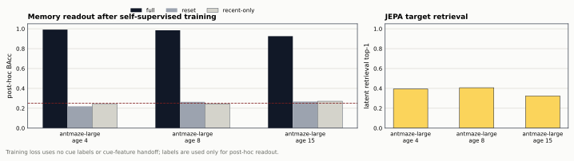
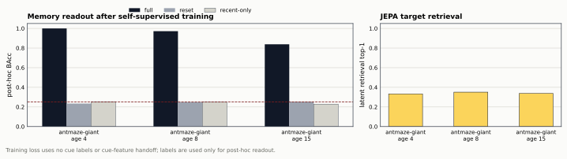
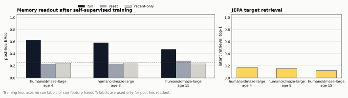
Last update: 2026-07-17T02:57:52. Machine-readable status: outputs/random_patchset_view_color_jepa_autorun_v1/status.json.
This older five-seed breadth result belongs to the fixed-panel diagnostic stage. It did not use cue labels in the JEPA loss, but it still used a fixed evidence-panel formation. The active overnight run above is stricter: it uses automatically mined random patch-set evidence and therefore is the result that should decide whether the non-manual method generalizes beyond PointMaze-large and Cube-single.
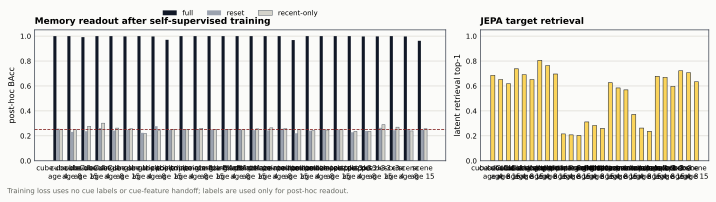
| Environment | Age | Seeds passed | Full BAcc | Reset BAcc | Recent-only BAcc | JEPA top-1 | Status |
|---|---|---|---|---|---|---|---|
| PointMaze-large | 4 | 5 / 5 | 1.000 | 0.255 | 0.253 | 0.312 | Pass |
| PointMaze-large | 8 | 5 / 5 | 1.000 | 0.250 | 0.250 | 0.283 | Pass |
| PointMaze-large | 15 | 5 / 5 | 1.000 | 0.246 | 0.256 | 0.260 | Pass |
| Cube-single | 4 | 5 / 5 | 1.000 | 0.263 | 0.302 | 0.738 | Pass |
| Cube-single | 8 | 5 / 5 | 1.000 | 0.242 | 0.263 | 0.691 | Pass |
| Cube-single | 15 | 5 / 5 | 0.998 | 0.248 | 0.257 | 0.652 | Pass |
| Scene | 15 | 5 / 5 | 0.962 | 0.248 | 0.257 | 0.634 | Pass |
| Puzzle-3x3 | 15 | 5 / 5 | 0.998 | 0.265 | 0.290 | 0.597 | Pass |
Status: the repaired current-method all-env run is complete at outputs/native_use_repaired_combined_v2. The final all-env table below is the source of truth: 27/36 env-age rows are scored, mean full-memory native success is 0.957, the worst scored full row is 0.828, and PointMaze-teleport is now admitted by the teleport-aware fixed controller.
Status: completed. The 25-cell Wall carrier grid ran over GPUs 0, 1, and 2 under outputs/dinowm_wall_audit_v1/stage_h_carriers. This is an exploratory carrier pass using a deterministic ridge readout to avoid the high-dimensional LBFGS bottleneck; promising Wall cells should later be rechecked with the registered logistic readout before paper claims.
Status: completed under outputs/dinowm_wall_audit_v1/stage_h_logistic_readout. A non-overwriting evaluator was added at scripts/evaluate_dinowm_wall_logistic_readout.py. It reloads the trained carriers and uses StandardScaler → PCA(256) → LogisticRegression(lbfgs) fitted only on the training split. This stricter readout confirms fixed-trust at age4, but not age8 or age15; state-space does not clear the host-output gate under this confirmation.
| Carrier | Age | Full BAcc | Reset | No-state | Carrier prior | Status |
|---|---|---|---|---|---|---|
| Fixed-trust | 4 / 8 / 15 | 0.929 / 0.446 / 0.297 | 0.250 | 0.250 | 1.000 / 1.000 / 1.000 | Age4 pass only |
| State-space | 4 / 8 / 15 | 0.565 / 0.301 / 0.272 | 0.250 | 0.250 | 1.000 / 0.995 / 0.989 | No confirmed pass |
| Carrier | Age | Full BAcc | Reset | No-state | Carrier prior | Status |
|---|---|---|---|---|---|---|
| None | 4 / 8 / 15 | 0.250 / 0.250 / 0.250 | 0.250 | 0.250 | 0.250 | Baseline |
| GRU | 4 / 8 / 15 | 0.278 / 0.268 / 0.260 | 0.250 | 0.250 | 0.963 / 0.872 / 0.753 | Prior only |
| LSTM | 4 / 8 / 15 | 0.353 / 0.272 / 0.269 | 0.250 | 0.250 | 1.000 / 0.974 / 0.761 | Prior only |
| State-space | 4 / 8 / 15 | 0.826 / 0.530 / 0.376 | 0.250 | 0.250 | 1.000 / 1.000 / 0.997 | Ridge screen age4 |
| Fixed-trust | 4 / 8 / 15 | 0.952 / 0.761 / 0.472 | 0.250 | 0.250 | 1.000 / 1.000 / 1.000 | Ridge screen age4–8 |
Wall strengthens the paper as a failure-localization result, not as a broad performance win. Both readouts show near-perfect carrier-prior memory for fixed-trust, but the stricter PCA-logistic readout confirms host-output exposure only at age4. The correct insight is that internal memory can exist while the frozen host fails to expose it robustly as evidence age grows.
Status: compiled at paper_b/main.pdf after the native-use revision. The latest source adds OGBench native fixed-controller success for PointMaze and Cube-single, refreshes the OGBench figure panel from feature-host BAcc to environment success, and keeps the claim boundary explicit: fixed-controller use, not native world-model planning.
The weak rows are not shortcut leaks: reset and recent-only controls remain near chance. The diagnostic compares full-memory accuracy, JEPA target retrieval, and the fraction of automatically mined target views that fall inside the true cue-visible window. This cue-window statistic is post-hoc only; it is not used in training.
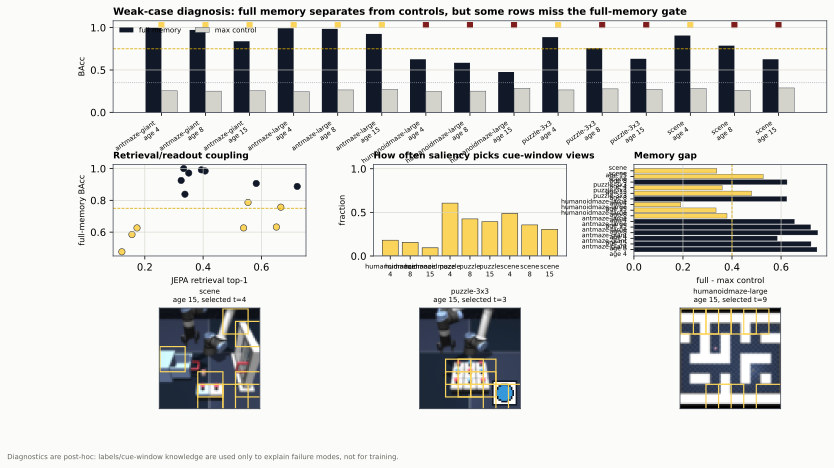
completed — 8/9 env-age rows passed; 1 mixed rows remain.
env-age rows pass the memory gate.
worst age-15 full-memory readout across environments.
hardest row: age 15 with 2/3 seeds passing.
This sweep measures retention/readout; repaired fixed-controller native success is reported in the all-env block below.
| Environment | Age | Seeds | Full | Reset | Recent | Status |
|---|---|---|---|---|---|---|
humanoidmaze-large-navigate-v0 | 4 | 3 / 3 | 1.000 | 0.239 | 0.248 | Pass |
humanoidmaze-large-navigate-v0 | 8 | 3 / 3 | 0.998 | 0.246 | 0.244 | Pass |
humanoidmaze-large-navigate-v0 | 15 | 3 / 3 | 0.898 | 0.271 | 0.246 | Pass |
puzzle-3x3-play-v0 | 4 | 3 / 3 | 0.990 | 0.266 | 0.231 | Pass |
puzzle-3x3-play-v0 | 8 | 3 / 3 | 0.956 | 0.245 | 0.263 | Pass |
puzzle-3x3-play-v0 | 15 | 3 / 3 | 0.849 | 0.236 | 0.256 | Pass |
scene-play-v0 | 4 | 3 / 3 | 0.987 | 0.241 | 0.236 | Pass |
scene-play-v0 | 8 | 3 / 3 | 0.964 | 0.263 | 0.238 | Pass |
scene-play-v0 | 15 | 2 / 3 | 0.823 | 0.239 | 0.287 | Mixed |
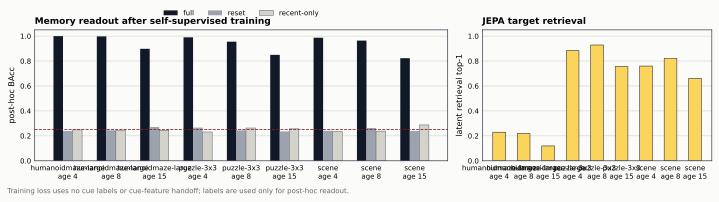
| Setting | Env / host | Age | Full-memory success | Main baseline | Random / no-state | Oracle | Status |
|---|---|---|---|---|---|---|---|
| Checkpointed PushT | DINO-WM | 15 | 0.972 | reset 0.167 | no-state 0.168 | — | Available |
| Checkpointed PushT | LeWM | 15 | 0.926 | reset 0.156 | no-state 0.151 | — | Available |
| Fixed-panel ME-JEPA | PointMaze-large | 4 / 8 / 15 | 1.000 / 1.000 / 1.000 | recent 0.255 / 0.281 / 0.264 | random 0.238 | 1.000 | Available |
| Fixed-panel ME-JEPA | Cube-single | 4 / 8 / 15 | 1.000 / 1.000 / 0.996 | recent 0.281 / 0.255 / 0.264 | random 0.238 | 1.000 | Available |
| Feature-host bridge | PointMaze-large + Cube-single | 4 / 8 / 15 | 1.000 all rows | reset 0.250 | random/no-state 0.250 | 1.000 | Available |
| Temporal-coverage current method | All tested OGBench envs | 4 / 8 / 15 | 27/36 rows; mean 0.957 | recent 0.279 mean | random 0.279 mean | 0.903-1.000 on scored rows | Completed |
Insight: the retention sweep proves old evidence survives the context boundary; the fixed-controller success rows show when that memory readout changes the final environment outcome. The temporal-coverage current-method all-env run is complete at outputs/native_use_repaired_combined_v2: PointMaze medium/large/giant/teleport, Cube single/double/triple, Scene, and Puzzle are scored; AntMaze and HumanoidMaze remain controller-unavailable.
Last update: 2026-07-17T11:47:40. Machine-readable status: outputs/multiview_patchset_color_jepa_weak_v1/monitor_status.json.
completed — Full baseline comparison finished in tmux session mem-arch-baselines-v1. The sweep covers GRU, LSTM, and Mamba-lite over all 12 tested OGBench environments, ages 4/8/15, and seeds 0/1/2.
baseline jobs completed at the latest monitor snapshot.
parallel workers completed cleanly on GPUs 0, 1, and 2.
failed baseline jobs reported so far.
final completed phase: scene age 15, seeds 0/1/2.
| Baseline | Completed jobs | Coverage target | Status |
|---|---|---|---|
GRU | 108 / 108 | 12 envs x 3 ages x 3 seeds | Completed |
LSTM | 108 / 108 | 12 envs x 3 ages x 3 seeds | Completed |
Mamba-lite | 108 / 108 | 12 envs x 3 ages x 3 seeds | Completed |
Last update: 2026-07-19T18:33:04+0800 snapshot. Live monitor: outputs/memory_arch_baselines_v1/monitor_status.json. Log: outputs/memory_arch_baselines_v1/tmux_baselines.log. Launcher: scripts/launch_memory_arch_baselines.py.
completed — 27/36 env-age rows have audited fixed-controller native success. Rows that fail controller validation or lack a local controller are reported as scope limits, not method failures.
env-age rows with native success-rate estimates.
mean full-memory executed success over supported rows.
worst supported full-memory executed success.
mean full-memory lift over recent and random baselines.
| Environment | Age | Seeds | Full | Recent | Random | Oracle | Status |
|---|---|---|---|---|---|---|---|
antmaze-giant-navigate-v0 | 4 | all | n/a | n/a | n/a | n/a | No local controller |
antmaze-giant-navigate-v0 | 8 | all | n/a | n/a | n/a | n/a | No local controller |
antmaze-giant-navigate-v0 | 15 | all | n/a | n/a | n/a | n/a | No local controller |
antmaze-large-navigate-v0 | 4 | all | n/a | n/a | n/a | n/a | No local controller |
antmaze-large-navigate-v0 | 8 | all | n/a | n/a | n/a | n/a | No local controller |
antmaze-large-navigate-v0 | 15 | all | n/a | n/a | n/a | n/a | No local controller |
cube-double-play-v0 | 4 | 3 | 0.944 | 0.281 | 0.281 | 0.944 | Completed |
cube-double-play-v0 | 8 | 3 | 0.944 | 0.236 | 0.281 | 0.944 | Completed |
cube-double-play-v0 | 15 | 3 | 0.944 | 0.233 | 0.281 | 0.944 | Completed |
cube-single-play-v0 | 4 | 3 | 1.000 | 0.219 | 0.244 | 1.000 | Completed |
cube-single-play-v0 | 8 | 3 | 1.000 | 0.225 | 0.244 | 1.000 | Completed |
cube-single-play-v0 | 15 | 3 | 1.000 | 0.250 | 0.244 | 1.000 | Completed |
cube-triple-play-v0 | 4 | 3 | 0.911 | 0.197 | 0.222 | 0.911 | Completed |
cube-triple-play-v0 | 8 | 3 | 0.911 | 0.222 | 0.222 | 0.911 | Completed |
cube-triple-play-v0 | 15 | 3 | 0.911 | 0.200 | 0.222 | 0.911 | Completed |
humanoidmaze-large-navigate-v0 | 4 | all | n/a | n/a | n/a | n/a | No local controller |
humanoidmaze-large-navigate-v0 | 8 | all | n/a | n/a | n/a | n/a | No local controller |
humanoidmaze-large-navigate-v0 | 15 | all | n/a | n/a | n/a | n/a | No local controller |
pointmaze-giant-navigate-v0 | 4 | 3 | 1.000 | 0.233 | 0.244 | 1.000 | Completed |
pointmaze-giant-navigate-v0 | 8 | 3 | 1.000 | 0.261 | 0.244 | 1.000 | Completed |
pointmaze-giant-navigate-v0 | 15 | 3 | 0.961 | 0.258 | 0.244 | 1.000 | Completed |
pointmaze-large-navigate-v0 | 4 | 3 | 1.000 | 0.256 | 0.244 | 1.000 | Completed |
pointmaze-large-navigate-v0 | 8 | 3 | 1.000 | 0.244 | 0.244 | 1.000 | Completed |
pointmaze-large-navigate-v0 | 15 | 3 | 0.992 | 0.225 | 0.244 | 1.000 | Completed |
pointmaze-medium-navigate-v0 | 4 | 3 | 1.000 | 0.244 | 0.244 | 1.000 | Completed |
pointmaze-medium-navigate-v0 | 8 | 3 | 1.000 | 0.267 | 0.244 | 1.000 | Completed |
pointmaze-medium-navigate-v0 | 15 | 3 | 0.986 | 0.194 | 0.244 | 1.000 | Completed |
pointmaze-teleport-navigate-v0 | 4 | 3 | 1.000 | 0.483 | 0.556 | 1.000 | Completed |
pointmaze-teleport-navigate-v0 | 8 | 3 | 1.000 | 0.667 | 0.556 | 1.000 | Completed |
pointmaze-teleport-navigate-v0 | 15 | 3 | 1.000 | 0.678 | 0.556 | 1.000 | Completed |
puzzle-3x3-play-v0 | 4 | 3 | 1.000 | 0.269 | 0.244 | 1.000 | Completed |
puzzle-3x3-play-v0 | 8 | 3 | 0.956 | 0.242 | 0.244 | 1.000 | Completed |
puzzle-3x3-play-v0 | 15 | 3 | 0.828 | 0.247 | 0.244 | 1.000 | Completed |
scene-play-v0 | 4 | 3 | 0.881 | 0.247 | 0.228 | 0.903 | Completed |
scene-play-v0 | 8 | 3 | 0.842 | 0.217 | 0.228 | 0.903 | Completed |
scene-play-v0 | 15 | 3 | 0.839 | 0.242 | 0.228 | 0.903 | Completed |
Last update: 2026-07-19T11:58:17. Machine-readable status: outputs/native_use_repaired_combined_v2/summary.json. Fixed-controller native use from ME-JEPA memory readout where a local audited controller exists. Teleport-aware PointMaze controller repair admits pointmaze-teleport; Ant/Humanoid remain unscored without local low-level controllers.
completed — 12/12 previously unscored env-age rows became scorable after repairing the fixed controllers and rerunning native-use recovery. PointMaze-teleport is now included after adding a teleport-aware PointMaze controller gate.
missing env-age rows recovered.
all-env native-use rows scored after repair.
cube-triple and cube-double full-memory native success means.
scene full-memory native success across ages 4/8/15.
| Environment | Ages | Seeds | Recovered native success | Outcome |
|---|---|---|---|---|
cube-double-play-v0 | 4 / 8 / 15 | 0,1,2 | full 0.944; oracle 0.944 | Recovered |
cube-triple-play-v0 | 4 / 8 / 15 | 0,1,2 | full 0.911; oracle 0.911 | Recovered |
scene-play-v0 | 4 / 8 / 15 | 0,1,2 | full 0.881 / 0.842 / 0.839; oracle 0.903 | Recovered |
pointmaze-teleport-navigate-v0 | 4 / 8 / 15 | 0,1,2 | full 1.000; oracle 1.000 | Recovered |
Last update: 2026-07-19T11:58:17+0800. Machine-readable status: outputs/native_use_repaired_combined_v2/summary.json. Supporting reruns: outputs/native_use_missing_recovery_v2/summary.json, outputs/native_use_scene_recovery_v3/summary.json, and outputs/native_missing_controller_repair_v1/native_use/summary.json.
completed — 12/12 failed-env age rows now pass the 0.850 true-label controller admission gate. The recovered rows are cube-double, cube-triple, scene, and pointmaze-teleport across ages 4/8/15.
env-age-seed controller cells audited.
env-age rows admitted.
PointMaze-teleport repaired controller mean.
best multi-object repaired row mean, cube-double age 4/15.
| Environment | Age 4 | Age 8 | Age 15 | Status |
|---|---|---|---|---|
cube-double-play-v0 | 0.958 | 0.939 | 0.958 | Admitted |
cube-triple-play-v0 | 0.900 | 0.908 | 0.911 | Admitted |
scene-play-v0 | 0.903 | 0.869 | 0.881 | Admitted |
pointmaze-teleport-navigate-v0 | 1.000 | 1.000 | 1.000 | Admitted |
Last update: 2026-07-19T11:58:17+0800. Machine-readable status: outputs/native_missing_controller_repair_v1/admission/summary.json. Controller-only audit; no ME-JEPA readouts are scored in this stage.
CEM v2 calibrates CE_norm=(L_drop-L_keep)/(L_no_memory+1e-8)
with Smooth-L1 plus all-pairs ranking loss. True deletion calibration
runs every optimizer step. LeWM injection is query-conditioned:
current context tokens cross-attend to surprise-gated slots before
residual injection; the frozen host digest is unchanged.
memory / no-memory loss; Spearman 0.6491; high-CE deletion 0.0001726 versus random −0.0000091.
Audit failed: 0.1708 fullfull / reset / no-state BAcc. Raw cue latent BAcc is 0.9958, but frozen decision-latent BAcc is chance 0.1667.
0.75 target not reachedSurprise versus saliency BAcc. Surprise cue/distractor writes: 32.5%/0%; saliency: 0%/100%.
Artificial saliency not requiredmemory / no-memory loss; audit 0.275/0.254/0.250; Spearman 0.050. Two-epoch normalized-CE smoke is undertrained.
Focused run failed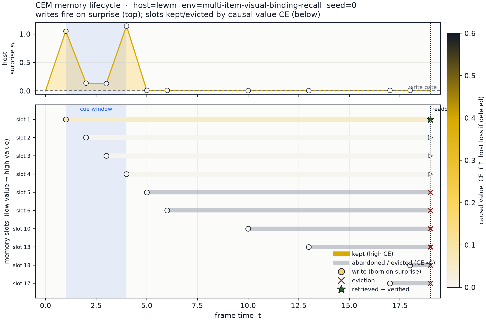
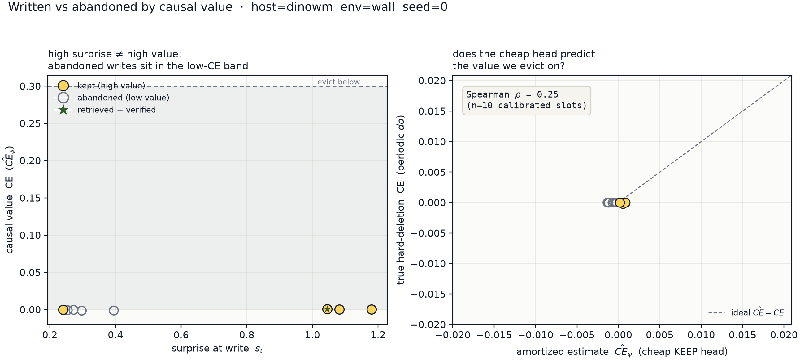
Ranking calibration passes LeWM seeds 0/1 but fails seed 2 (Spearman 0.1249); relation-specific signal still disappears between injected context and frozen host output. Surprise defeats the handcrafted saliency distractor, yet identity BAcc remains below 0.75. Router interference, lifetime/budget curves, and pretrained-DINO semantic patch targets remain unexecuted.
Artifacts:
outputs/cem_lewm_v2/multi-item-visual-binding-recall/s0,
outputs/cem_shortcut_v2/summary.json,
outputs/cem_dinowm_v2/wall/s0.
No paper_c/ files were changed.
V3 trains label-free InfoNCE/cosine objectives against six same-trajectory counterfactual cue branches at injected-context and frozen-host-output levels. It also calibrates matched three-frame group deletion and replaces pooled color targets with locally cached, frozen DINOv2 ViT-S/14 patch tokens.
A/B/C/D mean host outputs are 0.1576/0.1563/0.1556/0.1556. All controls remain 0.1417–0.1729.
0.75 gate failedConfig D cue latent → memory → injected context → host output. The collapse occurs before the frozen predictor.
Injection subspace bottleneckPredicted cue group beats a matched random group on 3/3 seeds; mean pairwise accuracy 0.689, mean Spearman 0.467.
Redundancy diagnosis confirmedSurprise semantic / random semantic / handcrafted saliency mean BAcc. Surprise wins every seed but misses the retention gate.
Write stability remains weakFull audit 0.9979/1.0/1.0; controls 0.25. High-CE deletion exceeds random on 3/3, but mean held-out Spearman is 0.3255.
Host-use audit passed 3/3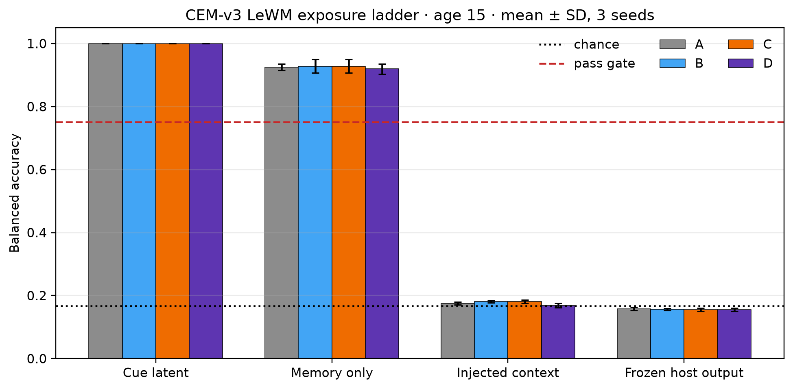
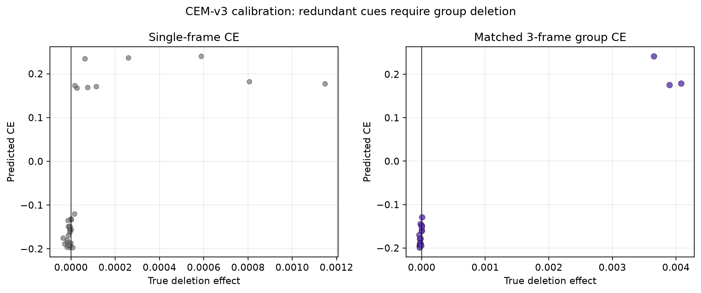
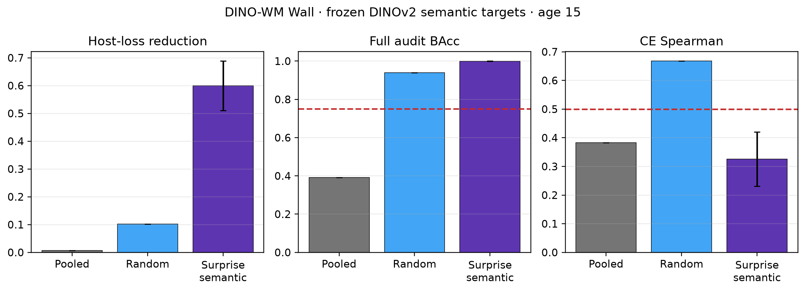
Counterfactual supervision is not enough when the current residual map projects readable memory into a host-inert direction. Replace it with a host-Jacobian-aligned or predictor key/value adapter. The six-epoch DINO-WM sweep is complete: pooled fails, random semantic passes seed 0, and surprise-semantic passes all three seeds. The artificial-miner concern is resolved for DINO host use, while held-out CE calibration remains below 0.5 on surprise-semantic.
Machine report: outputs/cem_v3_report.json.
Decision logs: outputs/cem_lewm_v3/{A,B,C,D}.
No paper_c/ files were changed.
The raw protocol consumes only original cached frames, actions, and timestamps. Frozen DINOv2 patch tokens provide semantics and a train-only action-conditioned DINO-feature host provides surprise and future-latent loss. Cached cue metadata, hand-written event labels, saliency, color rules, reward, goal, and simulator state are excluded from every write, keep, and recall decision.
PointMaze large/teleport and Cube single/triple use three seeds; six breadth environments use one. All host digests remain unchanged during CEM training.
No failed cells · GPU3 unusedCEM / no-memory mean MSE. Cell-level reduction is 0.719% (95% CI 0.621%–0.818%); all ten environments improve.
Positive across four familiesRecent-only / CEM MSE. CEM wins only 3/18 cells, so automatic event selection does not beat a simple context extension.
Superiority not establishedHigh-ranked / matched-random deletion ΔMSE. High wins 12/18; mean CE-hat Spearman is 0.037 and the deletion-gap CI crosses 0.
Causal ranking remains weakMemory / no-memory top-1 accuracy against seven shuffled action sequences. This is a post-hoc use test, not planning.
Small, inconsistent changeThe bounded retrieve-then-verify audit accepts 64.6% of routed candidates after the future target is observed. Its post-hoc verified-memory MSE is 0.48137. These values are reported separately and do not select the primary prediction.
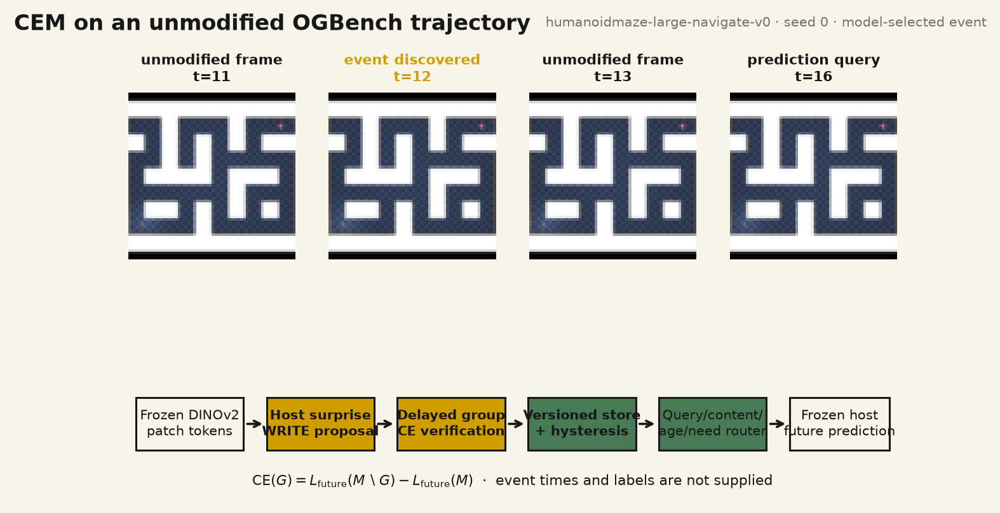
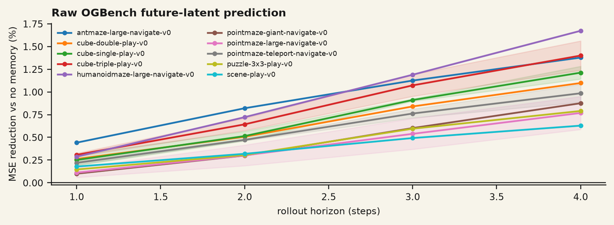
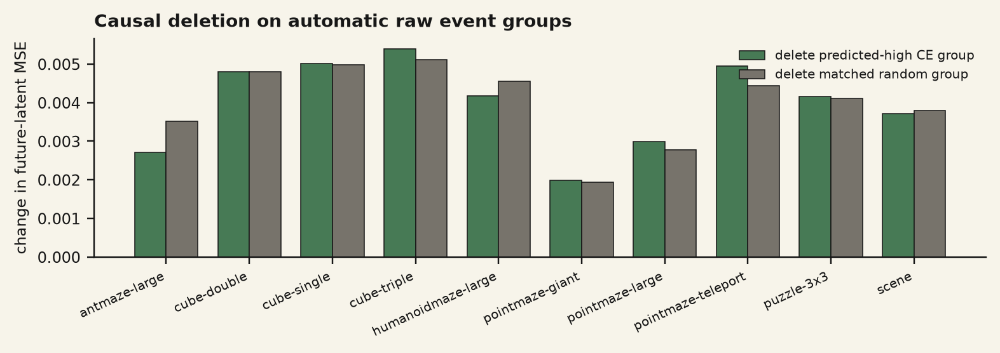
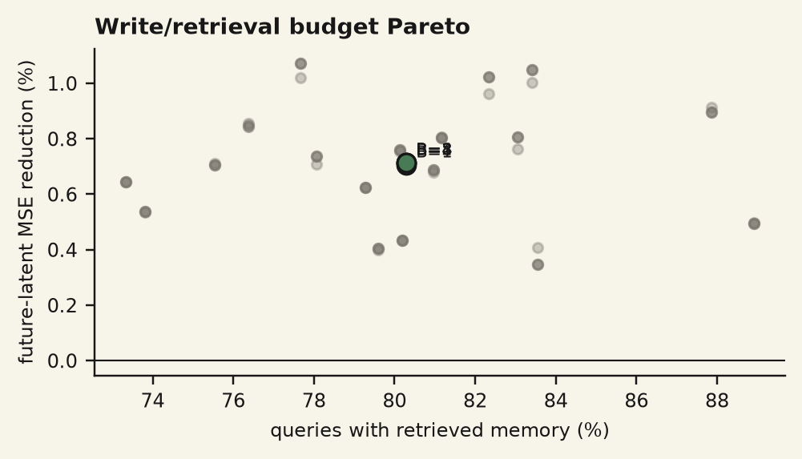
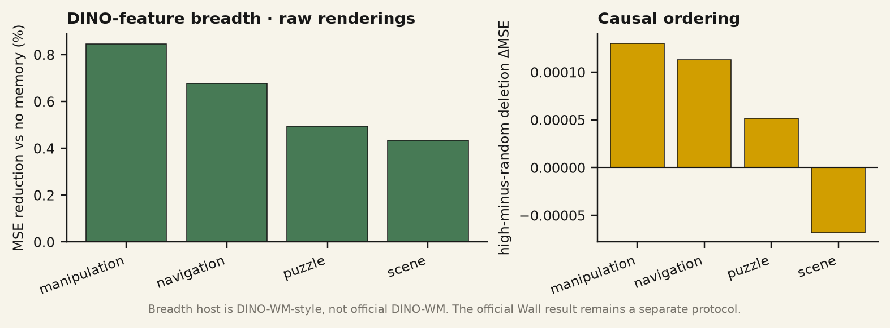
Raw CEM supplies useful past state beyond the finite host window and beats reset, shuffled-episode, and matched-norm controls. It does not consistently beat recent-only state, and its CE estimator is poorly calibrated. The existing official DINO-WM Wall result remains stronger causal evidence but uses a separate encoded event-versioning protocol.
Detailed report:
docs/CEM_RAW_OGBENCH_REPORT.md.
Machine results:
outputs/cem_raw_ogbench/report.json.
Decision logs:
outputs/cem_raw_ogbench/cells/<env>/s<seed>/decision_log.json.
Frame receipt:
outputs/cem_raw_ogbench/figure_receipt.json.